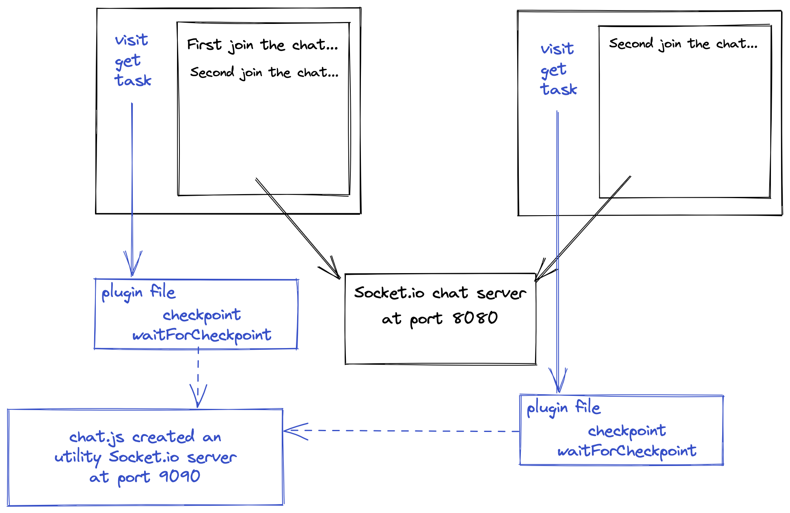
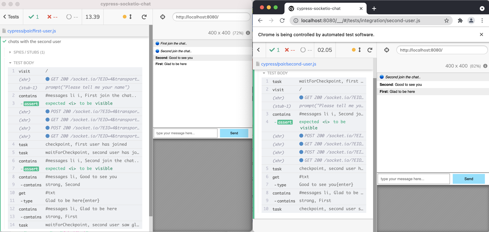

How to force two Cypress test runners to wait for each other while testing a real-time chat app.
Previous blog posts
Start by reading the blog posts Test a Socket.io Chat App using Cypress and Run Two Cypress Test Runners At The Same Time that give previous solutions to the problem of testing a real-time Socket.io chat application. Running two Cypress test runners at the same time sounds nice but the tests do NOT wait for each other - instead they "blindly" run through own test specs. In this blog post I will show how to truly control two test runners via common checkpoints.
We can start the first test runner, wait a few seconds, then start the second one. The simplest way to delay the second test runner is to launch Cypress through its NPM module API. In our case, we will start the runners by executing the Node script chat.js shown below:
// delay starting the second Cypress instance // to avoid any XVFB race conditions wait(5000).then(() => { console.log('starting the second Cypress') return cypress .run({ configFile: 'cy-second-user.json' }) .then((results) => { console.log('Second Cypress has finished') // TODO: exit with the test code from both runners process.exit(0) }) })
The need for checkpoints
The first runner should launch first. Let's think about the first test runner. It needs to join the chat first, validate that its "joined" message appears, then wait for the second user to join. How can the second test runner, executing its own spec file, know when to start? The two test runners can communicate via checkpoints.
cypress/pair/first-user.js
1 2 3 4 5 6 7 8 9 10 11 12 13 14 15 16 17
/// <reference types="cypress" />
// this test behaves as the first user to join the chat it('chats with the second user', () => { const name = 'First' const secondName = 'Second'
// make sure the greeting message is shown cy.contains('#messages li i', `${name} join the chat..`).should('be.visible') cy.task('checkpoint', 'first user has joined') })
The second test runner visits the page only after the first test runner signals that it has reached the checkpoint "first user has joined" and is waiting to continue.
cypress/pair/second-user.js
1 2 3 4 5 6 7 8 9 10 11 12 13 14 15
/// <reference types="cypress" />
// this test behaves as the second user to join the chat it('chats with the first user', () => { cy.task('waitForCheckpoint', 'first user has joined')
const name = 'Second' // we are chatting with the first user const firstName = 'First' cy.visit('/', { onBeforeLoad(win) { cy.stub(win, 'prompt').returns(name) }, }) })
Checkpoint implementation
The checkpoints thus require two tasks "checkpoint" and "waitForCheckpoint". The two test runners can communicate and set the checkpoints using ... a Socket.io server of their own. We already know how to write a Socket.io server - that's what the application server launches. We need to create another Socket.io server just for the test runners. We can use the chat.js script for this.
// Socket.io server to let two Cypress runners communicate and wait for "checkpoints" // https://socket.io/ const io = require('socket.io')(9090)
// keep the last checkpoint around // even if a test runner joins later, it // should still receive it right away let lastCheckpoint
io.on('connection', (socket) => { console.log('chat new connection') if (lastCheckpoint) { console.log('sending the last checkpoint "%s"', lastCheckpoint) socket.emit('checkpoint', lastCheckpoint) }
console.log('starting the first Cypress') // rest of Cypress starting code
When the apps run, they communicate via their own Socket.io server running on port 8080, while the test runners broadcast checkpoints via their own Socket.io server running on port 9090.

The plugins file can be shared among the test runners. The plugin file implements the checkpoint and waitForCheckpoint tasks, and acts as a client to the Socket.io server running on port 9090.
// Socket.io client to allow Cypress itself // to communicate with a central "checkpoint" server // https://socket.io/docs/v4/client-initialization/ const io = require('socket.io-client')
module.exports = (on, config) => { // this socket will be used to sync Cypress instance // to another Cypress instance. We can create it right away const cySocket = io('http://localhost:9090')
// receiving the checkpoint name reached by any test runner let checkpointName cySocket.on('checkpoint', (name) => { console.log('current checkpoint %s', name) checkpointName = name })
on('task', { // tasks for syncing multiple Cypress instances together checkpoint(name) { console.log('emitting checkpoint name "%s"', name) cySocket.emit('checkpoint', name)
returnnull },
waitForCheckpoint(name) { console.log('waiting for checkpoint "%s"', name)
// TODO: set maximum waiting time returnnewPromise((resolve) => { const i = setInterval(() => { console.log('checking, current checkpoint "%s"', checkpointName) if (checkpointName === name) { console.log('reached checkpoint "%s"', name) clearInterval(i) resolve(name) } }, 1000) }) }, }) }
When we run the two test runners, they dance with each other at the expected sequence.

The terminal output shows the checkpoint communication.
emitting checkpoint name "first user has joined" chat checkpoint: "first user has joined" current checkpoint first user has joined current checkpoint first user has joined waiting for checkpoint "second user has joined" checking, current checkpoint "first user has joined" checking, current checkpoint "first user has joined" checking, current checkpoint "first user has joined" checking, current checkpoint "first user has joined" checking, current checkpoint "first user has joined" ... checking, current checkpoint "first user has joined" reached checkpoint "first user has joined" emitting checkpoint name "second user has joined" chat checkpoint: "second user has joined" current checkpoint second user has joined current checkpoint second user has joined checking, current checkpoint "second user has joined" reached checkpoint "second user has joined" emitting checkpoint name "second user saw glad to be here" chat checkpoint: "second user saw glad to be here" current checkpoint second user saw glad to be here current checkpoint second user saw glad to be here waiting for checkpoint "second user saw glad to be here" checking, current checkpoint "second user saw glad to be here" reached checkpoint "second user saw glad to be here"